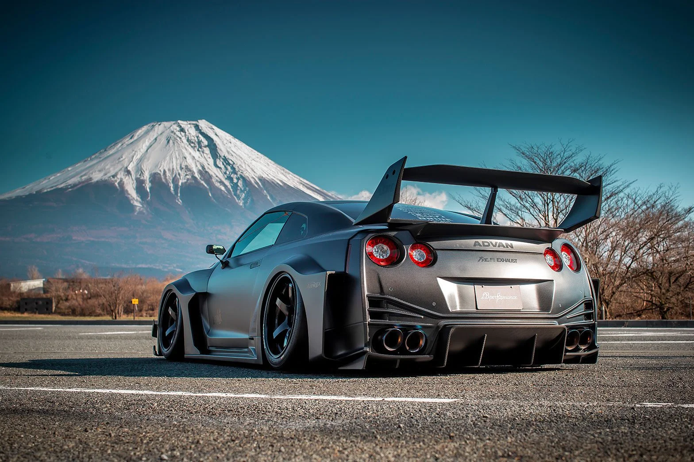
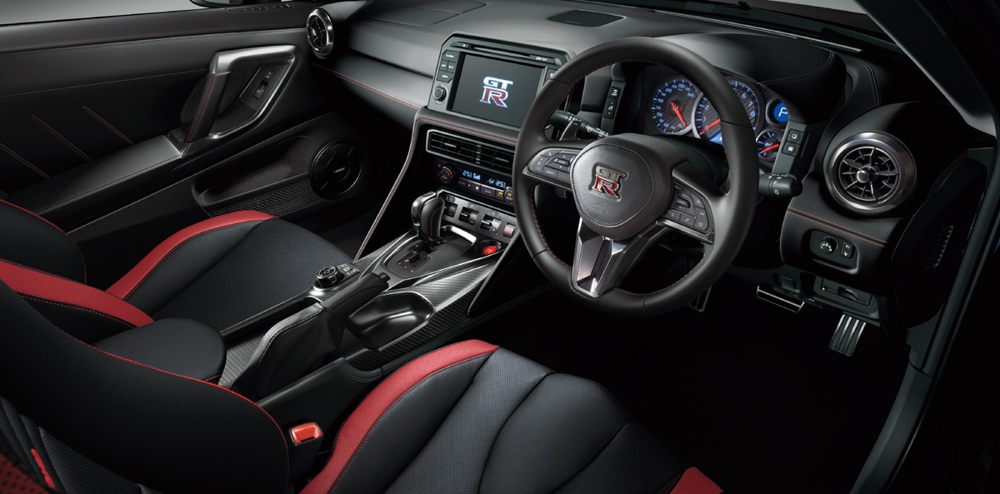
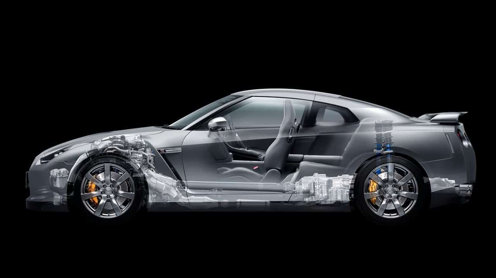

Estamos falando de um carro com melhor desing do mundo
Este carro é inssano ele tem tudo q um esportivo precisa força, conforto, qualidade, etc.
é um modelo de automóvel superesportivo produzido pela Nissan, foi anunciado em 2001 com o objectivo de dar sequencia a marca GT-R (que surgiu na década de 1960 que fez sucesso com o Skyline), em 6 de Dezembro de 2007 foi oficialmente lançado no Japão, em 2008 chegou aos Estados Unidos, Canadá e Portugal, no resto do mundo apenas em 2009. O modelo 2007 possui um motor 3.8 V6 Biturbo com potência de 480Cv (362 kW) e 59.95Kgfm (588,0N.m.) de torque, acoplado a uma transmissão automatizada de 6 marchas com dupla embreagem e sistema de tração AWD ATTESA E-TS®, esse conjunto fornece desempenho capaz de levar os 1740Kg de 0–100 km/h em 2.7s e tem velocidade máxima de 385 à 395 km/h
Site NissanFoto do gtr r35:
  